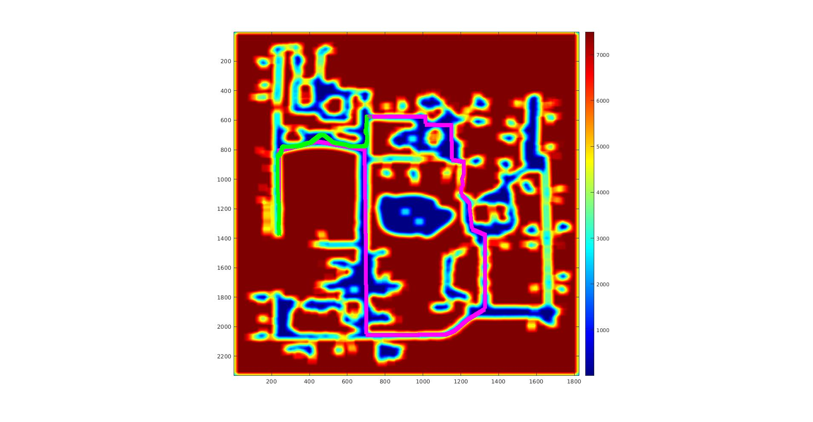
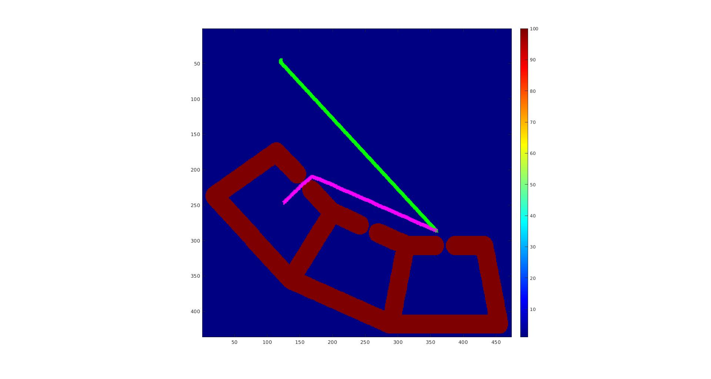
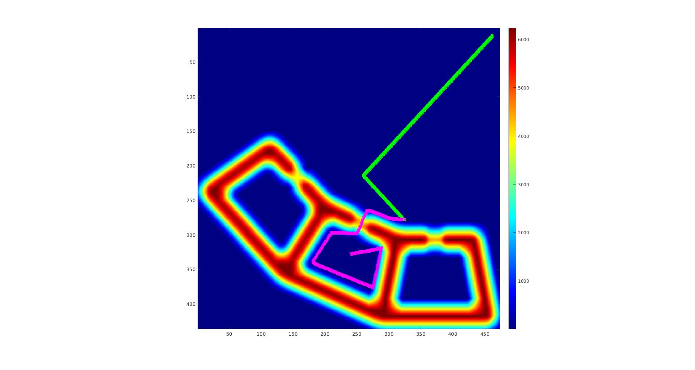
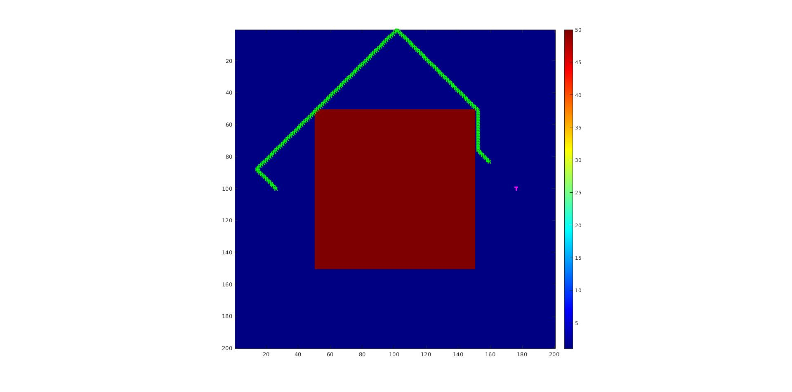
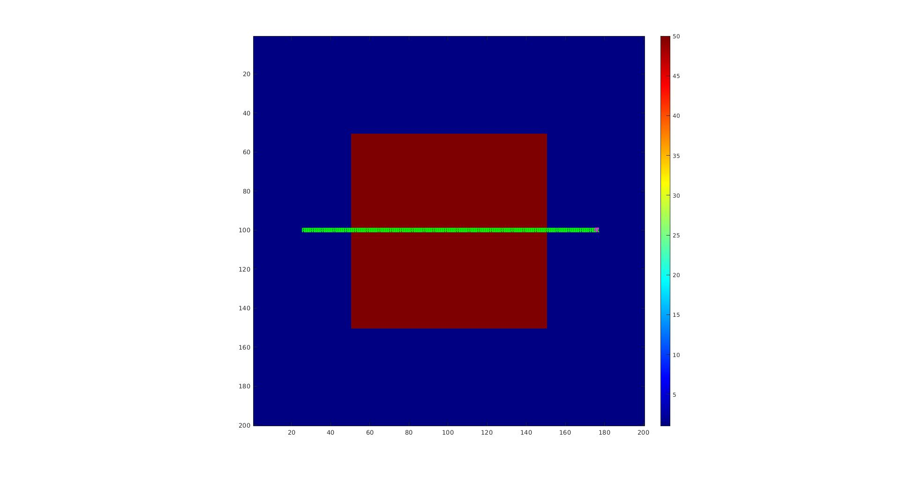
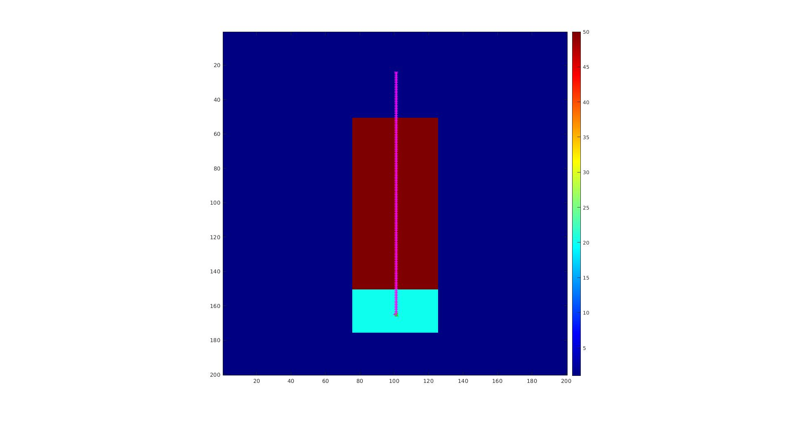

Mini project 1 · CMU 16-782
Mini project 1 · CMU 16-782
Catch me if you can.
Planning a robot to intercept a moving target on a grid map. The interesting move is that the hard part is not the search, it is choosing where to search to: pick the interception point well and an ordinary A* finishes the job.

The problem
A robot has to catch a target moving along a known trajectory through a cost map. Chasing the target directly is the obvious approach and the wrong one: following where it is means always arriving where it was. The robot needs to pick a point on the target's future trajectory that it can reach before the target does, go there, and wait.
That reframes the problem usefully. Instead of a moving goal, we need to choose a single static goal cell subject to a timing constraint, and then run a standard search to it.
Precomputing the goal
My approach precomputes a goal position: a cell in the target's trajectory that the robot can intercept in time, accounting for both the cost of getting to the cell and the cost of waiting there once it arrives.
To select it, a forward Dijkstra search runs from the robot's initial position. That gives the cost of reaching every point on the target's trajectory, and the number of time steps it takes to get there. Keeping only the cells the robot can reach in time, I sort the candidates in a priority queue by the cost of getting to the cell plus the cost of waiting in it, and take the minimum. That cell becomes the goal handed to A*.
The heuristic
With the goal chosen, a 2D backward Dijkstra runs from the goal outward, storing each cell's cost-to-goal in a hash map. Those values become the heuristic for the A* search. The direction matters: running Dijkstra backward from the goal means its g-values are precisely the true cost-to-go for every cell, which makes the heuristic both admissible and consistent, so A* keeps its optimality guarantee.
It is worth noting what this costs. Computing a perfect heuristic by exhaustive search is more expensive than the A* it accelerates, which would be self-defeating in general. Here it pays off because the same Dijkstra expansion is doing double duty: the forward pass chooses the goal, the backward pass guides the search to it.
Weighted A*
The path itself comes from 2D weighted A*, with the weight epsilon set to 100 across all results. A high weight inflates the heuristic and makes the search greedier, trading a bounded amount of optimality for a large speedup, which matters when the whole plan has to be produced before the target gets away. Backtracking happens inside the search, populating the path, and each call to the planner pops the next position off it.
I also wrote a 3D A* over (x, y, time), which is the more principled formulation since it reasons about where the robot can be when, but I could not get it working and the planner does not use it.
Results
The planner caught the target on maps 1 through 4, and on map 6. Map 5 is the interesting failure.



On map 5, weighted A* with the Dijkstra heuristic failed to catch the target, while a plain greedy search succeeded. The trade is visible in the numbers: greedy caught it in 150 moves at a path cost of 5050, against A*'s 182 moves at a cost of 182. A* found the far cheaper path and still lost, because on this map cheapness and speed point in different directions.


Map 6 makes the opposite point. A Euclidean heuristic and the Dijkstra heuristic produce identical results, 141 steps at a cost of 2820, but Euclidean gets there with less than two-thirds of the precompute time. When the map is open enough that straight-line distance is a good estimate, paying for an exact heuristic buys nothing.

The timing caveat
One honest detail from the write-up. The goal computation includes a time buffer to account for its own precompute time, which I set to 5 seconds in the submitted code because of uncertainty about the machine it would be graded on. That buffer is a real trade: increase it and the chosen goal becomes less optimal and the path more expensive, but the robot is guaranteed to arrive before the target. On map 1, with no buffer, a precompute exceeding 1.1 seconds would make the robot too late.
The results in the table were generated with the buffer at zero, for the most optimal cost.